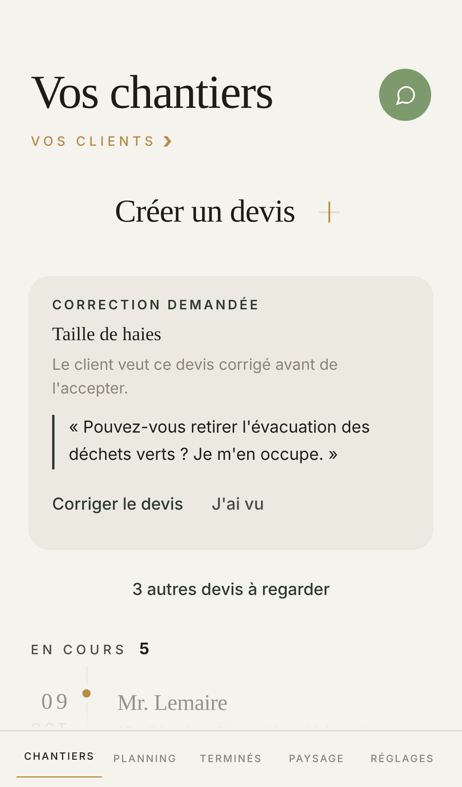

L'icône de Cause
7:30
Cause

Le rouge-gorge
L'ami du jardinier, celui qui chante : l'oiseau qui cause.
En tout petit
Cause
Mr. Lemaire a accepté le devis.
Cause
Les lettres sont sur la planche d'avant. Rien n'est installé.